Resumo
- O que é: app de espanhol da Espanha, para brasileiros, com explicações em português. Você aprende “viajando” pela Espanha com a Lu (personagem-guia) e o Lino (lince, o mascote).
- Curso: 117 lições em 39 unidades, em 9 etapas no mapa. 21 lições são de “Papelada”.
- Para quem: adultos brasileiros que vão viajar, estudar, trabalhar ou morar na Espanha, ou que já vivem lá.
- Planos: 7 lições grátis; depois, compra única ou assinatura mensal Premium.
- Status: iOS disponível na App Store; Android em teste fechado; demonstração no navegador.
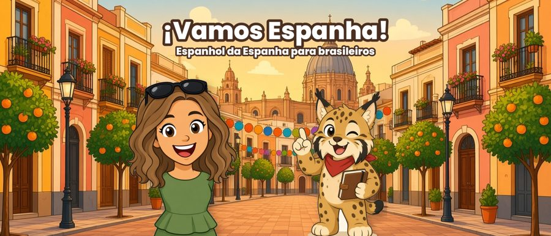
O que é o app
O ¡Vamos! (nome na loja: Vamos Espanha!) ensina o espanhol da Espanha para falantes de português do Brasil. As explicações são em português e as lições partem de situações reais: chegar ao aeroporto, pedir uma caña num bar, procurar piso, abrir conta no banco, ir ao médico. O curso dá atenção especial às palavras que parecem português mas não são (os falsos amigos).
A jornada acontece em um mapa da Espanha. Em cada etapa você conhece um lugar, passa pela Papelada e termina na Graduação. Ao concluir unidades você ganha selos; ao concluir uma etapa, o carimbo da região no seu passaporte. O app também tem XP, sequência de dias de estudo e corações.
- Lu: personagem ilustrada que guia a viagem; os diálogos começam com ela (“¡Hola! Soy Lu. Acabamos de aterrizar en Madrid.”).
- Lino: lince, o mascote. Dá dicas de falsos amigos e de cultura.
Para quem é
- Brasileiros adultos (o app é pensado para esse público) que vão viajar, estudar, trabalhar ou morar na Espanha, ou que já moram lá.
- Quem está começando e quer um caminho guiado em português; as primeiras lições partem do básico.
- Quem quer o espanhol da Espanha (“vale”, “coche”, “quedar”), e não uma mistura genérica de países.
- Não é preparatório para nenhuma prova e não promete nível de idioma.
Números do curso
Conferidos no conteúdo real do app.
- 39 unidades e 117 lições (3 por unidade).
- 9 etapas no mapa: 7 lugares da Espanha, mais Papelada e Graduação.
- Papelada: 7 unidades, 21 lições.
- Mais de 1.200 atividades (diálogos, vocabulário, exercícios, jogos e pílulas culturais).
- Cerca de 300 cartas no jogo “Igual, Quase ou Armadilha?”.
- 7 lições grátis: as 6 lições das duas primeiras unidades de Madrid e 1 amostra de Papelada.
| Etapa | Subtítulo | Unid. | Temas |
|---|---|---|---|
| Madrid | A chegada | 6 | Chegando a Madrid; No bar: cañas e tapas; Pelas ruas de Madrid; Trabalho e rotina; Cultura e lazer em Madrid; Escapadas e agenda |
| Barcelona (Cataluña) | - | 5 | Procurando piso; Horários e compras; Fim de semana em Barcelona; Festas e mercados; Barcelona de bairro |
| Andalucía | Sevilla, Granada e Málaga | 5 | Tapeando em Sevilla; Feria, Alhambra e praia; Flamenco e Córdoba; Granada, Cádiz e Semana Santa; Málaga e a serra |
| Valencia | Paella, Fallas e Turia | 5 | Sabores e Fallas; Vida em Valencia; Trabalho em Valencia; Mercado, Albufera e Tomatina; Ciência, praia e fogueiras |
| Papelada | Burocracia sem medo | 7 | Cita, TIE e padrón; Banco, trabalho e saúde; Contrato, nómina e renta; Nacionalidade; Casa: aluguel e contas; Emergências e polícia; Filhos: escola e saúde |
| Galicia | Santiago, rías e marisco | 3 | Santiago e o Caminho; Chuva e Rías Baixas; Vigo, A Coruña e queimada |
| País Vasco | Donostia, Bilbao e pintxos | 3 | Donostia; Bilbao; Sidra, txakoli e costa |
| Canarias | Teide, guaguas e carnaval | 3 | Tenerife; Carnaval e sotaque; Gran Canaria e Lanzarote |
| Graduação | Revisão final | 2 | Revisão da viagem; Formatura |
Total: 6 + 5 + 5 + 5 + 7 + 3 + 3 + 3 + 2 = 39 unidades.
Tipos de atividade
- Diálogo (Episódio): Conversa entre os personagens em situações reais, com áudio e tradução em português. Toda lição começa por um diálogo.
- Palavras novas: Vocabulário da lição, com emoji e imagem.
- Escolha a resposta: Pergunta de múltipla escolha com explicação em português.
- Ouça e escolha: Treino de compreensão auditiva: você escuta a frase em espanhol e escolhe o que ela significa.
- Monte a frase: Você monta a frase em espanhol a partir da frase em português, tocando nas palavras na ordem certa.
- Complete o diálogo: Escolha a fala que completa a conversa.
- Igual, Quase ou Armadilha?: Cartas para deslizar: a palavra é igual ao português, quase igual ou uma armadilha (falso amigo)? Cada carta tem uma dica do Lino. Cerca de 300 cartas no curso, perto de 100 de cada tipo.
- Chefão do dia: Mini-desafio de fim de lição com falsos amigos.
- Pílula cultural: Curiosidades e costumes do lugar da lição, com uma frase útil para ouvir.
Os diálogos têm áudio. Se os corações acabam, o aluno revisa os erros daquela tentativa e continua de onde parou, sem esperar e sem pagar.
Papelada: para quem vai morar na Espanha
Papelada (“burocracia sem medo”) é uma etapa com 7 unidades e 21 lições. Ensina a linguagem de situações do dia a dia de quem se muda para a Espanha:
- Cita, TIE e padrón
- Banco, trabalho e saúde
- Contrato, nómina e renta
- Nacionalidade
- Casa: aluguel e contas
- Emergências e polícia
- Filhos: escola e saúde
Vocabulário de exemplo: cita previa (agendamento), huellas (digitais), empadronamiento (registro de moradia na prefeitura), ventanilla (guichê), sello (carimbo), contrato de alquiler, nómina.
Planos e preços (em termos gerais)
- Grátis: 7 lições, sem pré-requisitos e sem prazo. A conta é opcional.
- Curso completo (todas as 117 lições, em qualquer ordem): compra única do curso atual, sem vencimento, ou assinatura mensal Premium, com renovação automática e acesso enquanto estiver ativa (cancelável pela loja).
- Novos cursos futuros não estão incluídos.
- Os preços aparecem na loja, em moeda local, antes da compra. Podem variar por país e podem mudar, por isso este kit não lista valores.
- Sem anúncios no app.
Status e links
| Plataforma | Situação em 30/10/2026 |
|---|---|
| iOS (iPhone e iPad) | Disponível na App Store: https://apps.apple.com/br/app/vamos-espanha/id6823107067 |
| Android | Em teste fechado (beta), com acesso por convite. Ainda não está público no Google Play. |
| Navegador (demonstração) | https://joao-bot80.github.io/vale-prototype/ Protótipo web com todas as lições abertas. Serve para conhecer o app; não é a versão final e não tem compras. |
O link do Google Play só deve ser divulgado quando o app estiver público no Android.
Mensagens-chave
- Espanhol da Espanha, explicado em português. Feito para brasileiros, com as diferenças entre português e espanhol no centro do curso.
- Aprenda viajando. Um mapa com 9 etapas, selos por unidade e carimbos no passaporte, de Madrid às Canarias.
- Fuja dos falsos amigos. O jogo “Igual, Quase ou Armadilha?” ensina o que parece português mas não é.
- Diálogos de verdade, com áudio. Aeroporto, bar, piso, banco, consulta.
- Papelada sem medo. Linguagem para a burocracia de quem vai morar na Espanha, sem substituir a orientação oficial.
- Comece grátis. 7 lições para experimentar, sem conta e sem anúncios.
- Uma prática por dia. Lições curtas, XP e sequência de dias.
Ganchos (frases de abertura)
- Pediu "una caña" num bar de Madrid? Você sabe o que vem no copo? (Dica: é um chope pequeno.)
- "Embarazada" NÃO é envergonhada. Esse é o falso amigo que mais rende vergonha (e risada).
- "Exquisito" é elogio na Espanha: quer dizer delicioso, não esquisito.
- "Pedir cita" não é pedir um encontro romântico: é marcar horário. Um clássico da papelada.
- Na Espanha o "ok, combinado" é "vale". Chévere, ahorita e órale são da América Latina.
- Igual, quase ou armadilha? Tente adivinhar: tasa, formulario, caducado.
- Um mapa da Espanha, 9 etapas e um passaporte para carimbar. Espanhol aprendido viajando.
- Vai morar na Espanha? Cita previa, huellas, empadronamiento: o vocabulário da papelada, em português claro.
- Seu espanhol é da Espanha? "Coche" é carro, "vaso" é copo, "carpeta" é pasta.
Falsos amigos reais do app
Todos estes pares estão no jogo “Igual, Quase ou Armadilha?”.
| Espanhol | Significa | Nota |
|---|---|---|
| embarazada | grávida | Envergonhada é "avergonzada". Não confunda! |
| exquisito | delicioso | "Exquisito" é elogio! Esquisito em espanhol é "raro". |
| polvo | pó, poeira | O polvo (animal) é "pulpo". Atenção: na Espanha, "polvo" também tem um uso de gíria vulgar. Para posts, prefira outros exemplos ou fale só de pó/poeira e do pulpo. |
| vaso | copo | Vaso de plantas é "maceta". |
| carpeta | pasta para documentos | Carpete ou tapete é "alfombra". |
| aceite | azeite / óleo | Em português, aceite é aceitação (o aceite de um cheque). |
| caducado | vencido | "Mi pasaporte está caducado" = meu passaporte está vencido. |
| rico | gostoso (comida) | "El jamón está muy rico" = o presunto está muito gostoso. |
| tarta | bolo (de aniversário) | "La tarta de cumpleaños lleva velas." Tarta também pode ser torta doce. |
| largo | comprido | Largo no sentido de largura é "ancho". |
| balcón | varanda / sacada | O balcão do bar é "la barra". |
| luego | depois | Em português, "logo" é "pronto" (já, em breve) ou "portanto". |
| presunto | suposto (ex.: "el presunto culpable") | O presunto de comer é "jamón". |
| extrañar | sentir falta, ter saudade | "Extraño a mi familia." |
Contrastes Espanha × América Latina no app: “vale” (Espanha) contra “chévere”, “ahorita”, “órale” para “ok, combinado”; “coche” é carro na Espanha; “quedar” é combinar de se encontrar.
Ideias de posts e legendas
Modelos para adaptar à sua voz. Troque “link na bio” pelo link oficial correto quando existir.
1. Carrossel: 5 falsos amigos que te fazem passar vergonha na Espanha
Roteiro: Slides: 1) capa com o título; 2) embarazada = grávida (e envergonhada = avergonzada); 3) exquisito = delicioso; 4) vaso = copo (de plantas é maceta); 5) carpeta = pasta de documentos (tapete é alfombra); 6) chamada para jogar "Igual, quase ou armadilha?" no app.
Legenda sugerida:
2. Reels/Stories: quiz "Igual, quase ou armadilha?"
Roteiro: Mostre 3 cartas em sequência e deixe o público votar (enquete/figurinha de quiz): tasa (quase: taxa; taça é copa), formulario (igual, mas sem acento), caducado (armadilha: vencido).
Legenda sugerida:
3. Reels: "Vale" é o ok da Espanha
Roteiro: Tela do exercício "Como um espanhol diz 'ok, combinado?'" com as opções chévere, ahorita, vale, órale. Resposta: vale. Chévere, ahorita e órale são da América Latina.
Legenda sugerida:
4. Story/Reels: chegada em Madrid
Roteiro: Mostre o primeiro diálogo da primeira lição (aeroporto): "¡Hola! Soy Lu. Acabamos de aterrizar en Madrid." / "Buenos días. ¿Me enseña su pasaporte, por favor?" / "Claro, aquí tiene." Pergunte: você sabe responder no controle de passaporte?
Legenda sugerida:
5. Reels: "Ponme una caña, por favor"
Roteiro: Cena do bar. Dica cultural do app: em Madrid, "salir de cañas" é pedir uma caña (um chope pequeno) e, em muitos bares, ganhar uma tapa de cortesia, como azeitonas ou batatas. Frase para ouvir: "Ponme una caña, por favor."
Legenda sugerida:
6. Carrossel: Papelada, o vocabulário
Roteiro: Slides: cita previa = agendamento (não é encontro romântico); huellas = digitais; empadronamiento = registro do lugar onde você mora, no ayuntamiento (prefeitura); ventanilla = guichê; sello = carimbo. Inclua o aviso: informação educativa, regras mudam, confira a fonte oficial.
Legenda sugerida:
7. Story: Dica do Lino "quedar"
Roteiro: Dica cultural do app (Madrid): na Puerta del Sol há uma placa no chão marcando o Kilómetro Cero; é ponto de encontro clássico. "Quedar" = combinar de se encontrar. Frase: "Quedamos en el Kilómetro Cero, ¿vale?"
Legenda sugerida:
8. Reels/Stories: o passaporte de carimbos
Roteiro: Capture a tela do Passaporte (assets/screenshots). Explique: ao concluir uma etapa você ganha o carimbo da região; ao concluir uma unidade, um selo. São 9 carimbos.
Legenda sugerida:
9. Reels: "Fuja dos falsos amigos" com o Lino
Roteiro: Use as ilustrações do Lino (lince) apontando o dedo. Texto na tela: coche = carro; vaso = copo; carpeta = pasta; luego = depois.
Legenda sugerida:
10. Post/Stories de lançamento: onde baixar
Roteiro: iOS: já disponível na App Store (use o link oficial do kit). Android: ainda em teste fechado, não divulgue link nem prometa data. Para quem não tem iPhone e quer experimentar: protótipo no navegador.
Legenda sugerida:
Hashtags úteis: #espanhol #aprenderespanhol #espanholparabrasileiros #falsosamigos #morarnaespanha #viagemparaespanha #espanhadaespanha #madrid
Regras de comunicação (obrigatórias)
- Nunca prometa nem afirme um nível de idioma (nada de "chegue ao B1", "você vai estar no nível intermediário" ou parecido). O app não promete certificação nem nível específico.
- Os nomes das provas DELE e CCSE podem ser citados como nomes de provas, mas o app não é um preparatório para elas e não há módulo de CCSE. Não prometa isso.
- Zero conotação política: fale de cultura, comida, viagem e idioma. Use os nomes das regiões como aparecem no app e não comente temas políticos.
- Não cite valores oficiais de taxas, multas ou custos de trâmites. O app ensina a linguagem dessas situações; não é assessoria jurídica ou migratória, e as regras mudam. Sempre mande conferir a fonte oficial.
- Fale só do que existe hoje. Não prometa novos cursos, módulos ou recursos futuros.
- Não diga que quem divulga o app revisa ou valida o conteúdo, a menos que isso já seja público.
- Lu é uma personagem ilustrada. Não apresente a Lu como se fosse uma pessoa real nem diga que a voz do app é de uma pessoa real.
- Preços: fale só em termos gerais (veja "Planos e preços"). Não invente valores, descontos, testes grátis ou promessas de gratuidade além das 7 lições grátis. O preço exibido na loja, antes da compra, é o que vale.
- Não prometa resultados ("fluente em X dias"). Fale de prática, vocabulário e situações reais.
- Se o post for parceria ou publicidade, identifique conforme as regras da plataforma e da legislação aplicável.
- Use apenas os links oficiais deste kit. O link do Google Play só deve ser divulgado depois que o app estiver publicado no Android.
Materiais (imagens)
Clique em uma imagem para abrir o arquivo em alta resolução. Os materiais são para divulgar o ¡Vamos!.
Ícone


Lu (personagem-guia)


Lino (mascote, um lince)


Capturas de tela, iPhone (1320×2868)

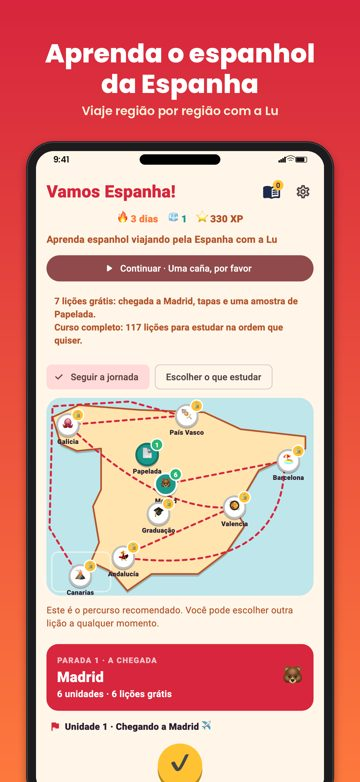

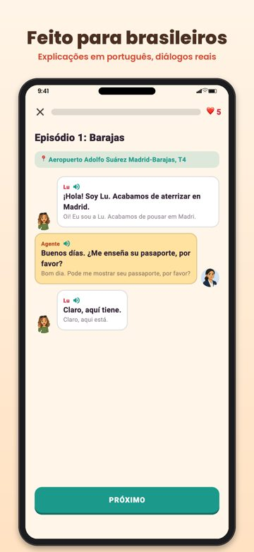

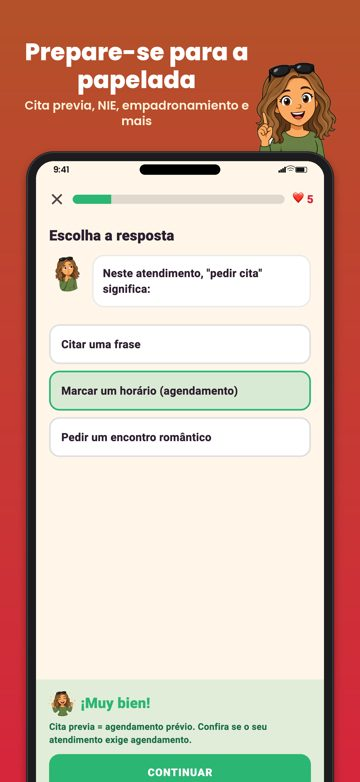

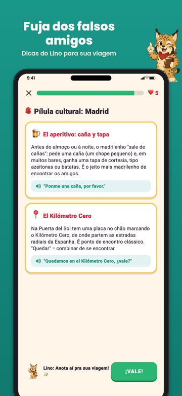

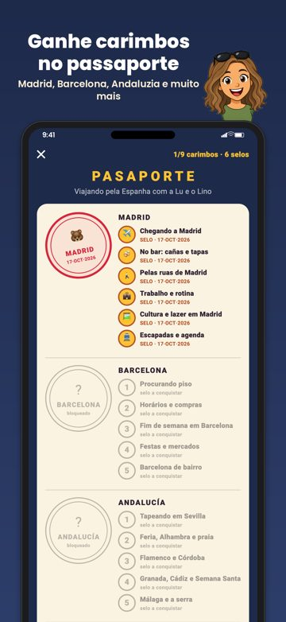
Capturas de tela, iPad (2048×2732)

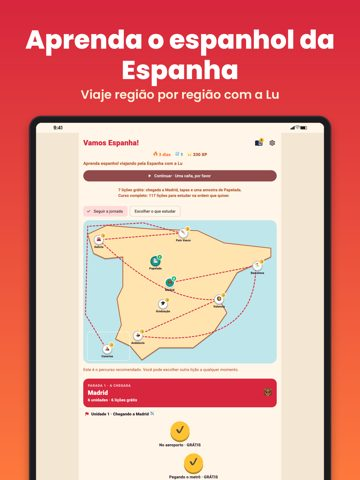

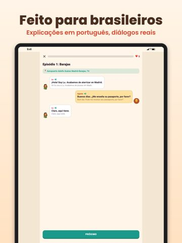

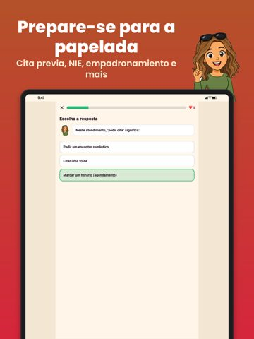

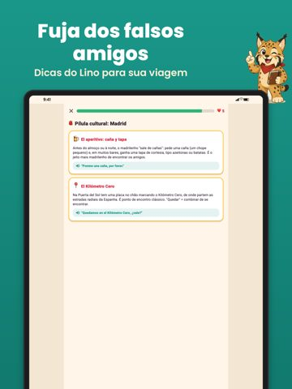

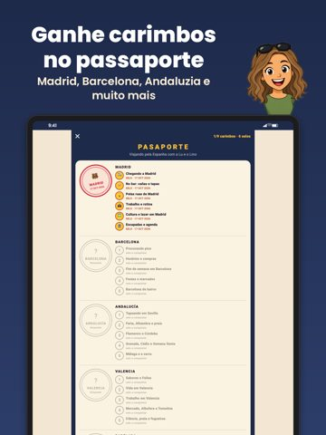
Capturas de tela, formato Android (780×1688)

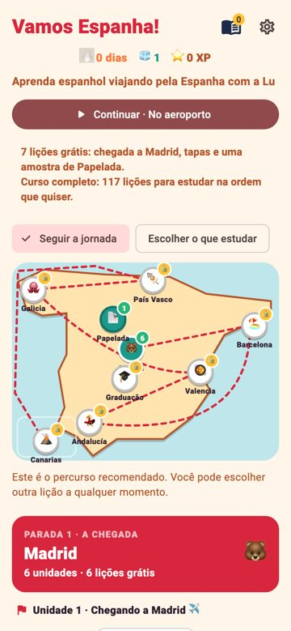

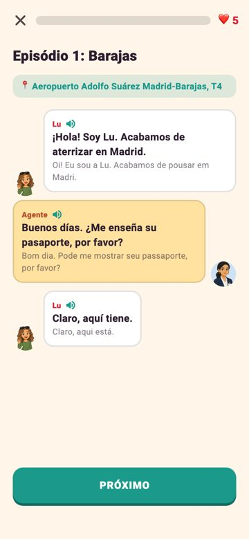

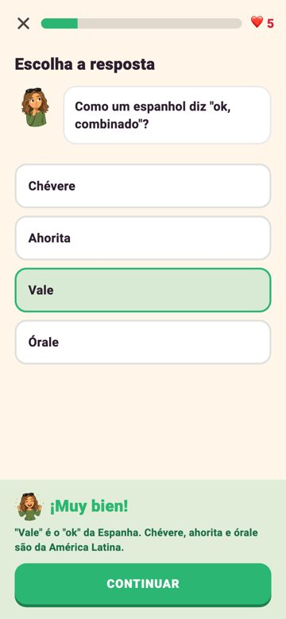

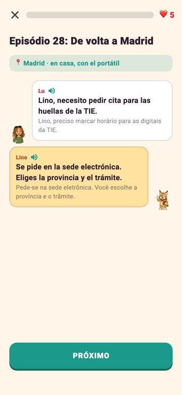

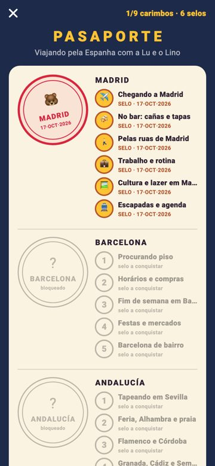
Banners


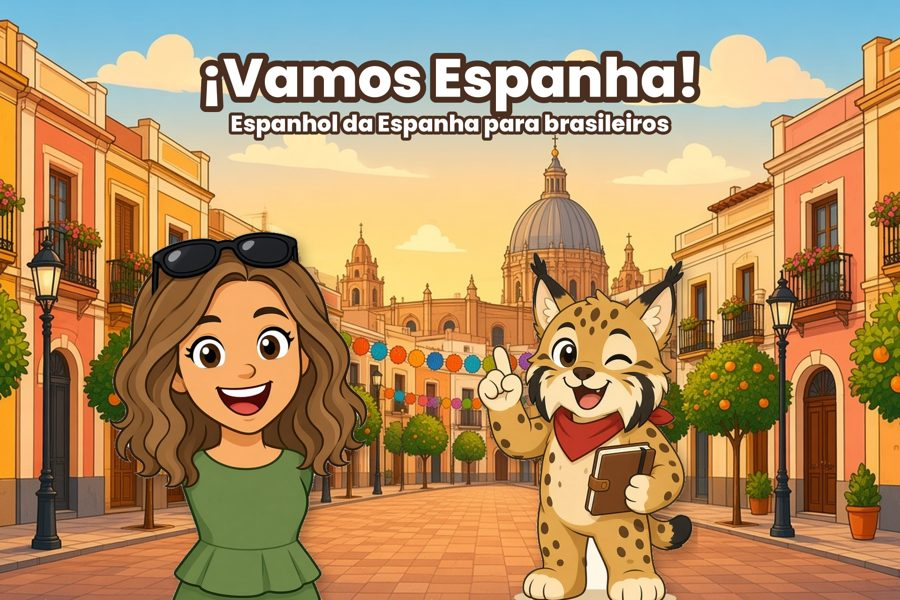

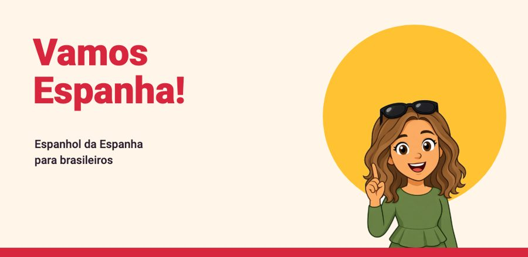
As capturas de iPhone e iPad são as usadas na App Store. As de formato Android mostram o mesmo conteúdo em outro formato. Os carimbos aparecem nas telas do passaporte; não há arquivos separados.
Contato e links oficiais
Privacidade em resumo: a conta é opcional; o app não usa publicidade nem rastreamento publicitário, não vende dados e usa apenas estatísticas de uso anônimas (detalhes na política). Veja a política completa no link acima.